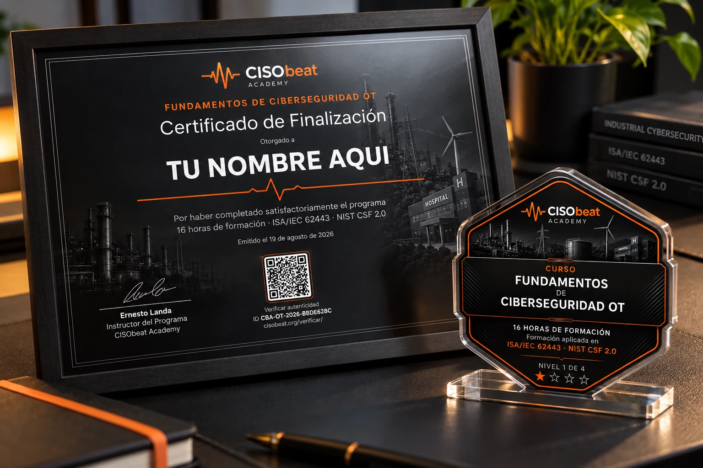
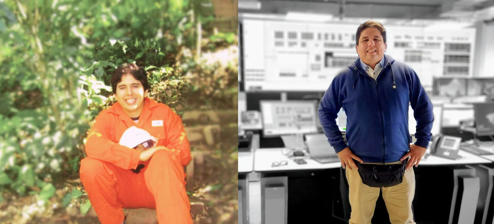
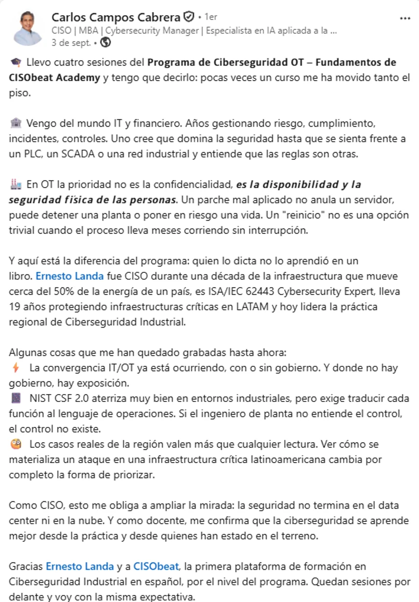
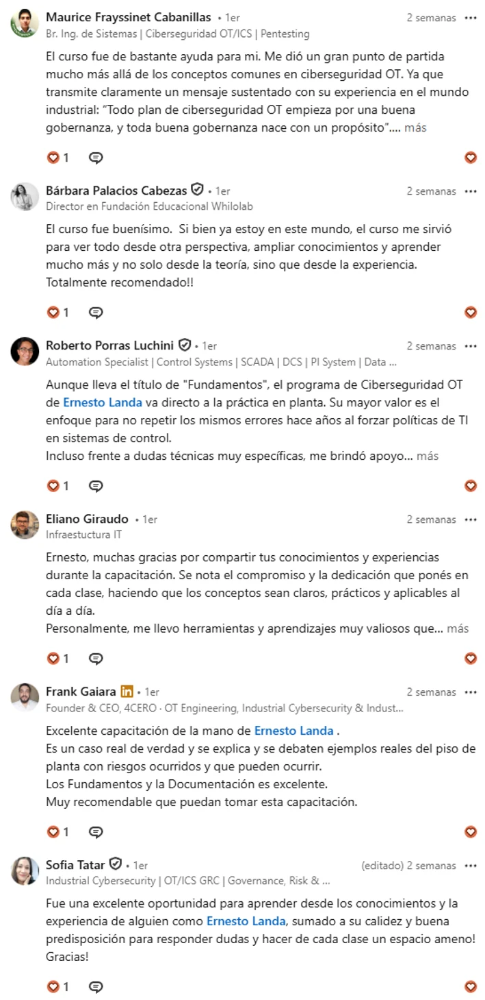
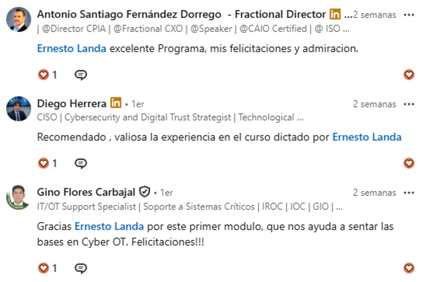
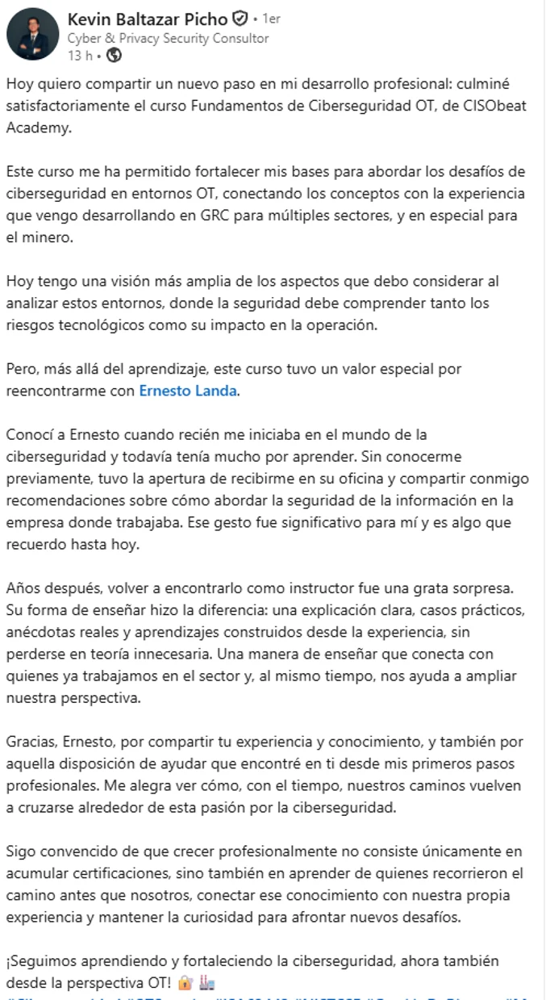
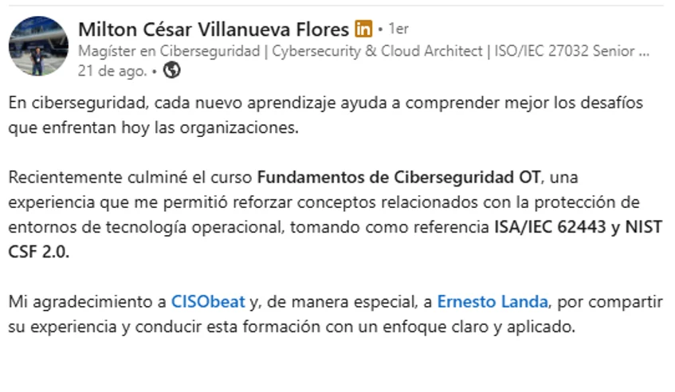
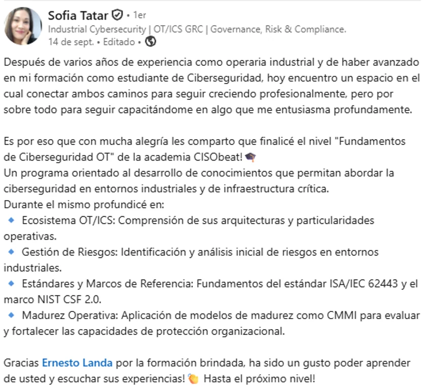

Identificar riesgos
Analiza el caso Planta Norte para reconocer riesgos en el entorno de tecnología operacional.
COHORTE NOVIEMBRE 2026
Entiende el riesgo.
Protege lo que hace funcionar la industria.
Da el primer paso para convertirte en el profesional de ciberseguridad OT que las empresas necesitan.
Aprende a identificar riesgos, evaluar brechas y proponer mejoras con una experiencia práctica sobre el caso Planta Norte.
Con Ernesto Landa · 30 cupos
APRENDER PARA ACTUAR
La ciberseguridad OT empieza por comprender los riesgos del entorno y convertir ese análisis en decisiones de mejora.
Para profesionales de ingeniería, operaciones, IT, auditoría y consultoría que trabajan con entornos industriales. Puedes empezar sin experiencia previa en ciberseguridad OT.
Analiza el caso Planta Norte para reconocer riesgos en el entorno de tecnología operacional.
Usa el checklist de madurez para ordenar hallazgos y entender dónde enfocar la atención.
Trabaja con la plantilla de riesgos y transforma el diagnóstico en una propuesta práctica.
Identifica brechas y oportunidades de mejora con una evaluación basada en C2M2 v2.1.
Convierte los hallazgos en medidas propuestas, responsables y seguimiento, bajo ISA/IEC 62443.
Las 8 horas de contenido grabado se intercalan con 8 horas de sesiones en vivo. Una secuencia para estudiar, aplicar y volver sobre tus hallazgos.
Comprende las particularidades del entorno industrial y las consecuencias de tratarlo como un entorno IT.
Analiza ataques que marcaron a la industria para comprender las amenazas y extraer aprendizajes prácticos.
Relaciona ISA/IEC 62443 y NIST CSF 2.0 con decisiones de ciberseguridad en entornos industriales.
Evalúa la situación de un entorno OT con criterios concretos para reconocer brechas y orientar mejoras.
RESERVA ESTAS FECHAS
Martes y jueves · 19:30–21:30
Hora de Ciudad de México (GMT−6).
Martes · 19:30–21:30
Jueves · 19:30–21:30
Martes · 19:30–21:30
Jueves · 19:30–21:30
Todas las sesiones corresponden a noviembre de 2026. Tu calendario ajustará los encuentros a tu zona horaria.
LO QUE TE LLEVAS
Material de consulta para acompañar el recorrido.
Una guía para evaluar brechas.
Una estructura para documentar tu análisis.
Credenciales del curso.
TU APRENDIZAJE, CON RESPALDO
El curso incluye un certificado verificable y una insignia digital de nivel 1 de CISObeat Academy.


QUIÉN TE ACOMPAÑA
Cuenta con 20 años de experiencia en ciberseguridad de entornos industriales. Trabajó en Transportadora de Gas del Perú, empresa responsable de aproximadamente el 50 % del suministro energético del país. Actualmente lidera la práctica de Ciberseguridad OT de Deloitte en Latinoamérica.
Es mentor reconocido por el Centro de Ciberseguridad Industrial (CCI) de España. Creó CISObeat para compartir lo aprendido a lo largo de su trayectoria, con el enfoque práctico con el que le hubiera gustado formarse.
Aprender con Ernesto ↗TESTIMONIOS · EXPERIENCIAS REALES
Testimonios de cursos anteriores, publicados en la web de CISObeat. Conoce sus experiencias en sus propias palabras.
TAMBIÉN LO COMPARTIERON EN LINKEDIN
“La ciberseguridad se aprende mejor desde la práctica y desde quienes han estado en el terreno.”
Perspectiva de un profesional de IT y gestión de riesgos sobre el aprendizaje en OT.
Leer publicación en LinkedIn ↗
Ampliar captura ↗“Todo plan de ciberseguridad OT empieza por una buena gobernanza, y toda buena gobernanza nace con un propósito”Maurice Frayssinet Cabanillas · comentario en LinkedIn
Comentarios sobre la experiencia práctica, la gobernanza y el aprendizaje en clase.
Leer publicación en LinkedIn ↗
Ampliar captura ↗
“Su forma de enseñar hizo la diferencia: una explicación clara, casos prácticos, anécdotas reales y aprendizajes construidos desde la experiencia”
Una experiencia que conecta las bases de OT con el trabajo en GRC.
Leer publicación en LinkedIn ↗
“por compartir su experiencia y conducir esta formación con un enfoque claro y aplicado.”
Aprendizaje aplicado a la protección de entornos de tecnología operacional.
Leer publicación en LinkedIn ↗
“Gracias Ernesto Landa por la formación brindada, ha sido un gusto poder aprender de usted y escuchar sus experiencias!”
Un puente entre la experiencia industrial y la formación en ciberseguridad.
Leer publicación en LinkedIn ↗
ELIGE TU TARIFA
30 cupos en total. Promoción para los primeros 20 alumnos nuevos.
Promoción para los primeros 20 alumnos nuevos.
Sujeto a disponibilidad de la promoción.
Inscripción con la tarifa regular del curso.
Tarifa para egresados de CISObeat.
Las tarifas de lanzamiento y regular abren el checkout de Hotmart. El descuento de egresados se solicita por WhatsApp. Los importes en USD son precios base; el checkout puede aplicar impuestos y mostrar moneda local.
Realiza el pago por Yape al +51 959 545 350. Luego, envía la constancia de pago por WhatsApp a ese mismo número.
Enviar constancia por WhatsApp ↗ANTES DE INSCRIBIRTE
Son 8 horas en vivo, distribuidas en cuatro sesiones de dos horas, y 8 horas grabadas intercaladas en el recorrido.
19:30–21:30, hora de Ciudad de México (GMT−6), los días 3, 5, 10 y 12 de noviembre de 2026. El archivo de calendario adapta las sesiones a tu zona horaria.
La tarifa de US$67 aplica a los primeros 20 alumnos nuevos. La tarifa de egresados es US$49 y la regular es US$99.
Manual, checklist de madurez, plantilla de riesgos, certificado verificable e insignia nivel 1, con trabajo práctico sobre el caso Planta Norte.
FUNDAMENTOS DE CIBERSEGURIDAD OT